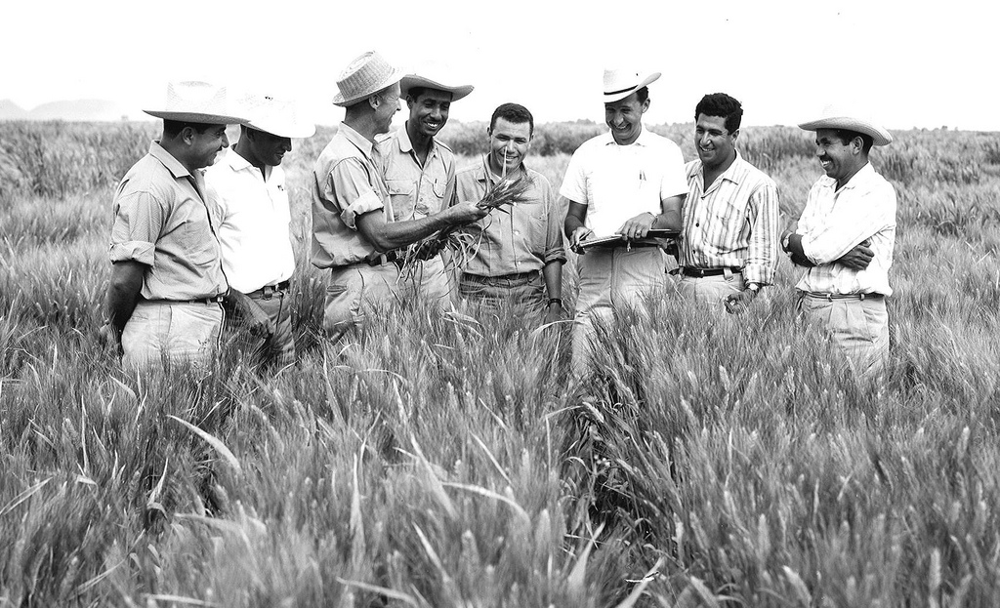

Dr. Norman Borlaug, third from the left, trains biologists in Mexico on how to increase wheat yields – part of his life-long war on hunger.
Here’s a time line of Dr. Borlaug’s life:
- 1914 – Born in Cresco, Iowa
- 1933 – Leaves his family’s farm to attend the University of Minnesota, thanks to a Depression era program known as the “National Youth Administration”
- 1935 – Has to stop school and save up more money. Works in the Civilian Conservation Corps, helping starving Americans.
- 1937 – Finishes university and takes a job in the US Forestry Service
- 1938 – Marries wife of 69 years Margaret Gibson.
- 1941 – Tries to enroll in the military after the pearl Harbor attack, but is rejected.
- 1942 – Receives a ph.D. in Genetics and plant pathology
- 1944 – Rejects a 100% salary increase from Dupont, leaves his pregnant wife, and flies to Mexico.
- 1945 – Discovers a way to grow wheat twice each season, doubling wheat yields
- 1963 – Crosses a short, sturdy dwarf breed of wheat with a high-yielding American breed.
- 1962 – Visits Delhi and brings his high-yielding strains of wheat to the Indian subcontinent.
- 1970 – Receives the Nobel peace prize
- 1983 – Helps seven African countries dramatically increase their maize and sorghum yields
- 1984 – Becomes a distinguished professor at Texas A&M University
- 2005 – Warns we must double the world food suply by 2050.
- 2009 – Dies at the age of 95
“Borlaug’s life and achievement are testimony to the far-reaching contribution that one man’s towering intellect, persistence and scientific vision can make to human peace and progress.”
— Indian prime Minister Manmohan Singh